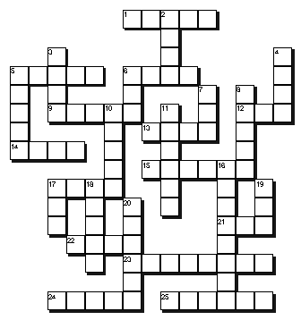
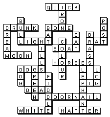

|
[Across]
1. As _____
as a flash
5. As _____ as a lord
6. As dry as a _____
9. As _____ as a feather
12. I suspect something. I smell a _____ .
13. We're all in the same _____ .
14. I see her very rarely: I see here once in a blue _____ .
15. Yes it's true, got it straight from the _____ mouth.
17. Let sleeping _____ lie
21. Stop making a _____ of yourself, you're disgusting.
22. You might just as well give it up; you're flogging a _____ horse here.
23. As dead as a _____
24. Oh come on, I'm not being dishonest, that was just a little _____
lie
25. As mad as a _____
|
 |
|
|
Solution

|
[Down]
2. As hard as _____
3. Like a _____ in a china shop
4. As deaf as a _____
5. Don't
worry, it'll work like a _____ .
6. As blind as a _____
7. There's no room here to swing a _____
8. As bold
as _____
|
[Down]
10. As old as the _____
11. Not feeling quite well: feeling a bit off _____
16. It cost a lot but it's utterly useless: it's a white _____ .
17. As sick as a _____
18. We can go ahead now. We've been given the _____ light
19. I slept like a _____ .
20. As fit as a _____
|
|
|
|